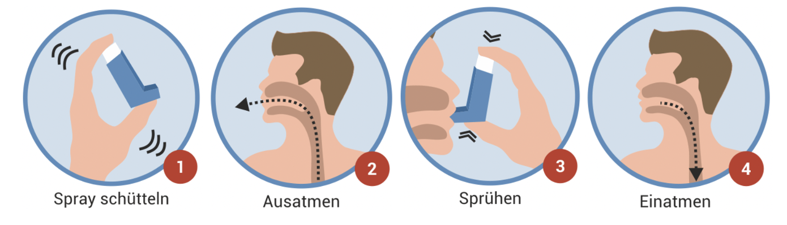

Asthma ist eine chronische Erkrankung der Atemwege in der Lunge. Während eines Asthmaanfalls schwellen die Atemwege an, verengen sich und produzieren zusätzlichen Schleim – das Atmen wird erschwert. Besonders kritisch sind Anfälle bei Kindern oder älteren Menschen. Ein schwerer Asthmaanfall kann lebensbedrohlich sein.
Viele Betroffene besitzen ein Inhaliergerät, das sie im Notfall selbst anwenden können. Trotzdem ist es wichtig, im Ernstfall schnell und gezielt zu handeln.
Person beruhigen und aufrecht lagern: Setzen oder stellen Sie die Person in eine bequeme, aufrechte Position, damit sie leichter atmen kann. Sprechen Sie ruhig mit ihr und helfen Sie, Panik zu vermeiden.
Inhalator helfen zu verwenden: Reichen Sie der betroffenen Person ihren Inhalator. Wenn ein Spacer (Vorschaltkammer) verwendet wird, helfen Sie beim korrekten Anbringen. Spacer verbessern die Wirksamkeit der Medikamentengabe, besonders bei Kindern.
Enge Kleidung lockern: Öffnen Sie Kragen, Schals oder enge Kleidung, um die Atmung zu erleichtern.
Auslöser entfernen: Entfernen Sie die betroffene Person aus staubiger, kalter oder anderweitig reizender Umgebung.
Atmung beobachten: Bleiben Sie bei der Person und achten Sie auf Veränderungen im Atemmuster, in der Farbe der Haut oder in der Reaktionsfähigkeit.
Mitfühlend unterstützen: Kindern beim Einsatz des Inhalators mit Spacer helfen. Auch wenn sich der Zustand bessert, sollte eine ärztliche Abklärung folgen.
Rufen Sie sofort den Rettungsdienst, wenn:
Nur bei vorhandener Schulung: Wenn Sie geschult sind und Sauerstoff zur Verfügung steht, verabreichen Sie diesen entsprechend der Anweisung.
Merke: Schnelles, ruhiges Handeln rettet Leben. Beruhigen Sie die betroffene Person, helfen Sie beim Inhalieren – und zögern Sie nicht, medizinische Hilfe zu rufen, wenn sich die Symptome verschlechtern oder nicht bessern.